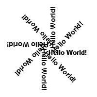

DrawRotatedText()
语法
DrawRotatedText(x, y, Text$, Angle.f [, Color])概要
Displays the given string on the current output at the given angle.
参数
x, y The location of the top/left corner of the text in the output. This is also the location around which the string will be rotated. Text$ The text to draw. Angle.f The angle in degrees to rotate counterclockwise starting from the normal text orientation. Color (optional) The color to be used for the text. 如果未指定此参数，将使用与FrontColor()设置的默认颜色。这种颜色可以使用RGB或RGBA格式。The background of the rotated text is always transparent.
返回值
无.
示例
If OpenWindow(0, 0, 0, 200, 200, "2DDrawing Example", #PB_Window_SystemMenu | #PB_Window_ScreenCentered) If CreateImage(0, 200, 200) And StartDrawing(ImageOutput(0)) Box(0, 0, 200, 200, RGB(255, 255, 255)) For Angle = 0 To 360 Step 45 DrawRotatedText(100, 100, "Hello World!", Angle, RGB(0, 0, 0)) Next Angle StopDrawing() ImageGadget(0, 0, 0, 200, 200, ImageID(0)) EndIf Repeat Event = WaitWindowEvent() Until Event = #PB_Event_CloseWindow EndIf

参阅
DrawText(), DrawingFont(), FrontColor()
已支持操作系统
所有